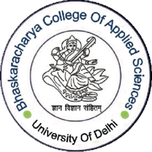

BHASKARACHARYA COLLEGE OF APPLIED SCIENCES
(University of Delhi)
Accredited "A++" Grade by NAAC
'Star College Status' by DBT
2023 NIRF Ranking - 22

Vision and Mission
The motto of Bhaskaracharya College of Applied Sciences (BCAS) is ‘Gyan Vigyan Sanghitam’ which is the guiding force for accomplishing its mission of imparting holistic education to students. With good governance policies and concerted efforts, it enables students to experience an unparalleled educational journey that is intellectually, socially, and personally stimulating. The leadership and governance of the Institute are based on participative management and decision-making which ensures a conducive environment for attaining the following vision and the mission of the college: · To foster an academic environment that encourages a spirit of enquiry, innovation and experimentation. · To nurture an ecosystem that promotes democratic values, inclusivity, diversity, freedom of expression and creativity.